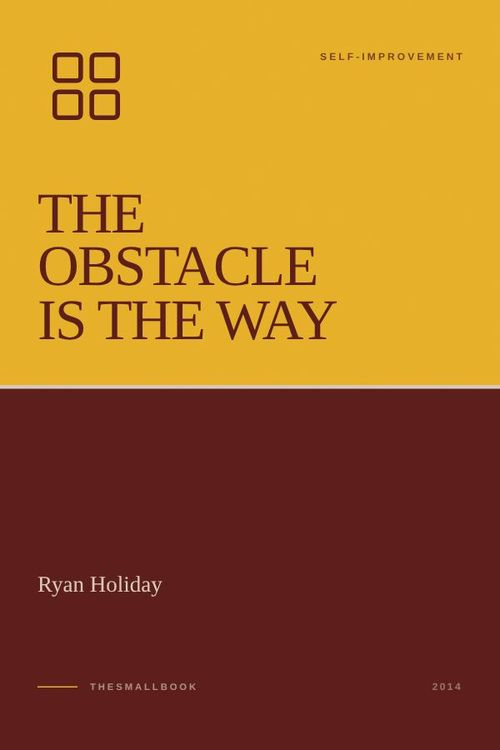
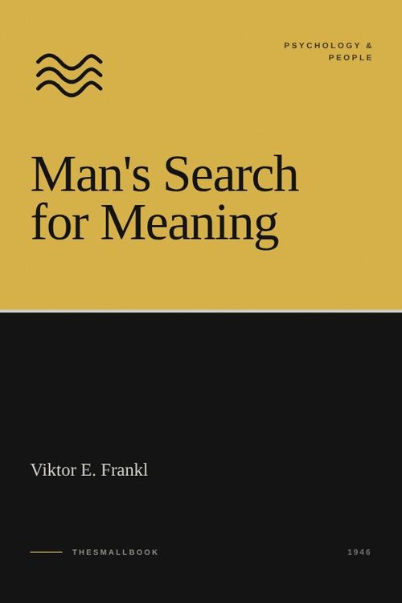

Library › Ask the Library › How do I deal with failure?
How do I deal with failure?
The short answer
Failure is not the opposite of success, it's tuition. Extract the lesson, own your part, and use the loss as data instead of identity.
The books behind the answer

The Obstacle Is the Way
Ryan Holiday · 2014 · 8 min · 6 lessons
The impediment to action advances action. What stands in the way becomes the way - through perception, action, and will.
- The Flip: Every Obstacle Inverts: The obstacle is not in the way, it IS the way. What is this failure asking you to become?

How to Fail at Almost Everything and Still Win Big
Scott Adams · 2013 · 8 min · 6 lessons
The Dilbert creator failed at everything - then won by using systems instead of goals, stacking mediocre skills into rarity, and managing energy like capital.
- Energy, Luck Surface, and Failing Forward: Problems don't go away when you win, they change. Failure is just a problem to solve.

Man's Search for Meaning
Viktor E. Frankl · 1946 · 9 min · 7 lessons
Everything can be taken from a man but one thing: the freedom to choose one's attitude in any given set of circumstances.
- The Last Human Freedom: You can't always choose your situation, but you can always choose your response to it.

Grit
Angela Duckworth · 2016 · 8 min · 6 lessons
Talent × effort = skill. Skill × effort = achievement. Effort counts twice - and grit, not genius, predicts who finishes.
- The Hard Thing Rule: Grit is showing up after the fall. The comeback is the skill.
A failure that proves it
Why did New Coke fail?
1985 · BUSINESS · Loss: 79 days of chaos, permanent lesson
New Coke failed in 79 days, and Coca-Cola used the lesson to come back stronger than ever.
People don't buy what things taste like; they buy what things MEAN. Data is only as good as the question - and no focus group can measure what customers don't know they'd grieve.
Why did Kodak fail?
2012 · BUSINESS · Loss: A 130-year empire
Kodak's real failure wasn't the mistake, it was refusing to learn from it in time.
Your cash cow is someone else's target. Cannibalize yourself or be eaten - the choice is only ever WHO does it, never whether.
Also asked in Hindi and Hinglish
People also ask this as: failure se kaise bahar niklein, haar ke baad kya karein. The answer on this page stays in simple English, and the live book can be read in Hindi or Hinglish.
Questions people ask next
Can I read this in Hindi?
Yes. This answer is written in simple English. Open any linked book and choose Hindi or Hinglish to read the full lessons in your language, with audio where available.